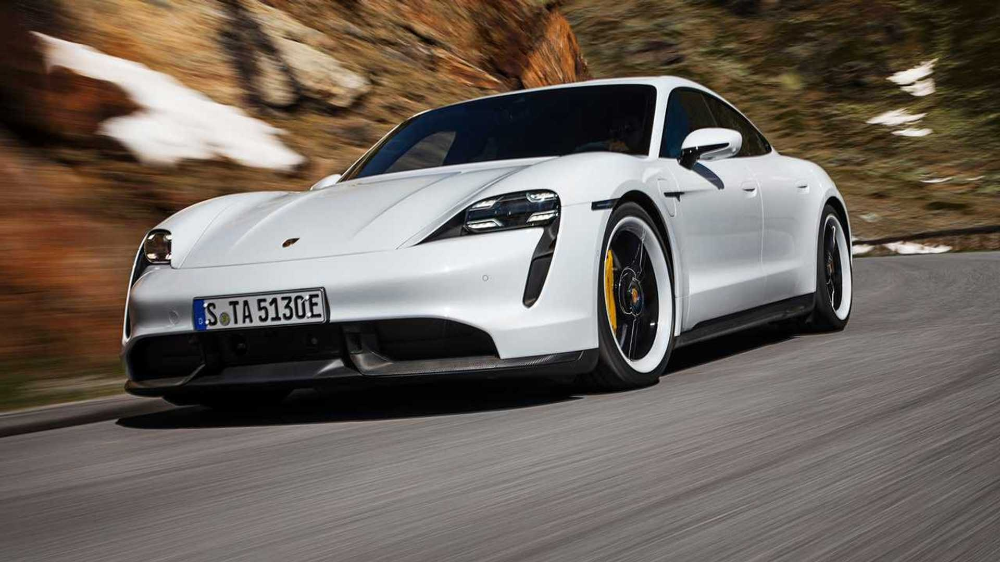

100% elétrico
100% elétrico
Matrix LED
A assinatura de quatro pontos que se reconhece antes do resto do carro.
Pinças amarelas
Freios cerâmicos PCCB — a cor existe para ser lida a 200 metros.
Turbo S
Ficha técnica
Design
Interior
Cockpit digital, acabamento em couro, tudo pensado pro motorista.

Na estrada
Testado em estrada, não só em estúdio.
Taycan Turbo S
Tração integral, freios cerâmicos e resposta imediata — o suficiente pra esquecer que é elétrico.
Reviver a experiência